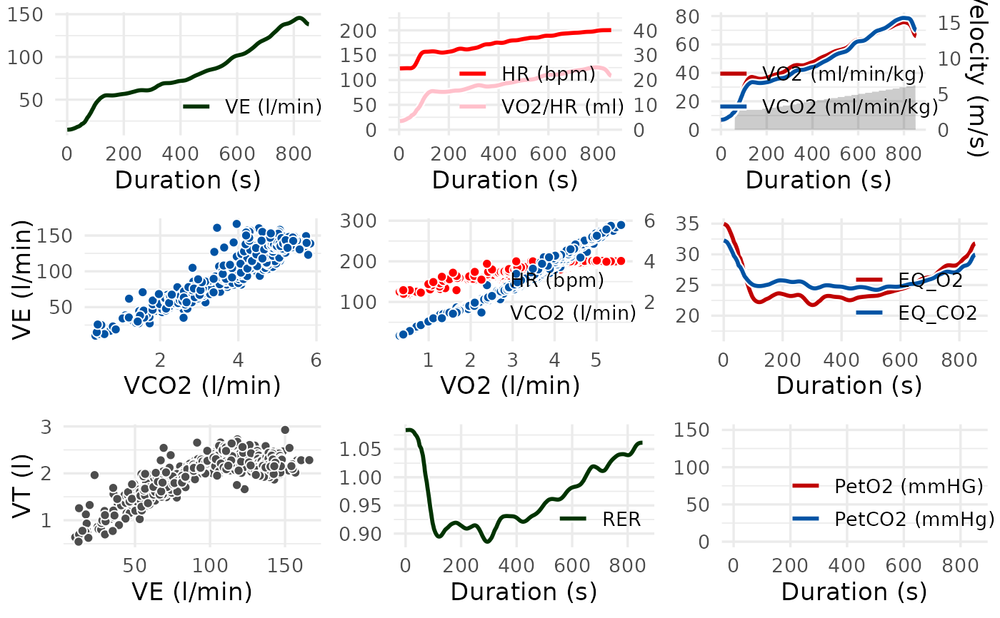
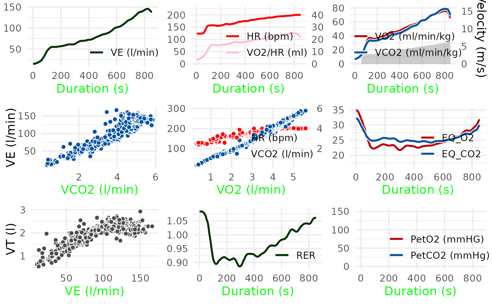

spiro_plot() returns a ggplot2 graph visualizing data from
cardiopulmonary exercise testing.
Arguments
- data
A
data.frameof the classspirocontaining the gas exchange data. Usually the output of aspirocall.- which
A numeric integer setting the plot panels to be displayed. The panels are numbered in the order of the traditional Wasserman 9-Panel Plot:
1: VE over time
2: HR and oxygen pulse over time
3: VO2, VCO2 and load over time
4: VE over VCO2
5: V-Slope: HR and VCO2 over VO2
6: EQVO2 and EQVCO2 over time
7: VT over VE
8: RER over time
9: PetO2 and PetCO2 over time
- smooth
Parameter giving the filter methods for smoothing the data. Default is
fzfor a zero phase Butterworth filter. Seespiro_smoothfor more details and other filter methods (e.g. time based averages)- base_size
An integer controlling the base size of the plots (in pts).
- style_args
A list of arguments controlling the color and size of lines and points. See the section 'Customization' for possible arguments. Additional arguments are passed to ggplot2::theme() to modify the appearance of the plots.
- grid_args
A list of arguments passed to
cowplot::plot_grid()to modify the arrangement of the plots.- vert_lines
Whether vertical lines should be displayed at the time points of the first warm-up load, first load, and last load. Defaults to FALSE.
Details
This function provides a shortcut for visualizing data from metabolic carts
processed by the spiro function.
Customization
There are three ways to customize the appearance of plots in
spiro_plot. First, you can control the color and size of points and
lines with the style_args argument. For a list of available arguments
that should be passed in form of a list, see below. Second, you can change
the appearance of axis and plot elements (e.g, axis titles, panel lines) by
passing arguments over to ggplot2::theme() via the style_args
argument. Third, you can modify the arrangement of plots by the which
argument and customize the arrangement by passing arguments to
cowplot::plot_grid() via the grid_args argument.
Style arguments
size = 2Defines the size of all points
linewidth = 1Defines the width of all lines
color_VO2 = "#c00000",color_VCO2 = "#0053a4",color_VE = "#003300",color_VT = "grey30",color_RER = "#003300",color_HR = "red",color_pulse = "pink"Define the color of lines and points in the following plot panels: VO2 (panel 3,6,9), VCO2 (3,4,5,6,9), VE (1), VT (7), RER (8), HR (2,5), pulse (2)
- Additional arguments
Are passed to
ggplot2::theme()
Examples
# \donttest{
# Import and process example data
ramp_data <- spiro(
file = spiro_example("zan_ramp"),
hr_file = spiro_example("hr_ramp.tcx")
)
# Display the traditional Wasserman 9-Panel Plot
spiro_plot(ramp_data)
#> For heart rate data, smoothing was based on interpolated values.

# Display selected panels, here V-Slope
spiro_plot(ramp_data, which = 5)
# Modify the arrangement of plots by passing arguments to
# cowplot::plot_grid() via the grid_args argument
spiro_plot(ramp_data, which = c(4, 5, 6, 8), grid_args = list(nrow = 1))
# Modify the appearance of plots using the style_args argument
spiro_plot(ramp_data, style_args = list(size = 0.3, color_VCO2 = "black"))
#> For heart rate data, smoothing was based on interpolated values.
# Modify the appearance of plots by passing arguments to ggplot2::theme() via
# the style_args argument
spiro_plot(ramp_data,
style_args = list(axis.title.x = ggplot2::element_text(colour = "green"))
)
#> For heart rate data, smoothing was based on interpolated values.

# }